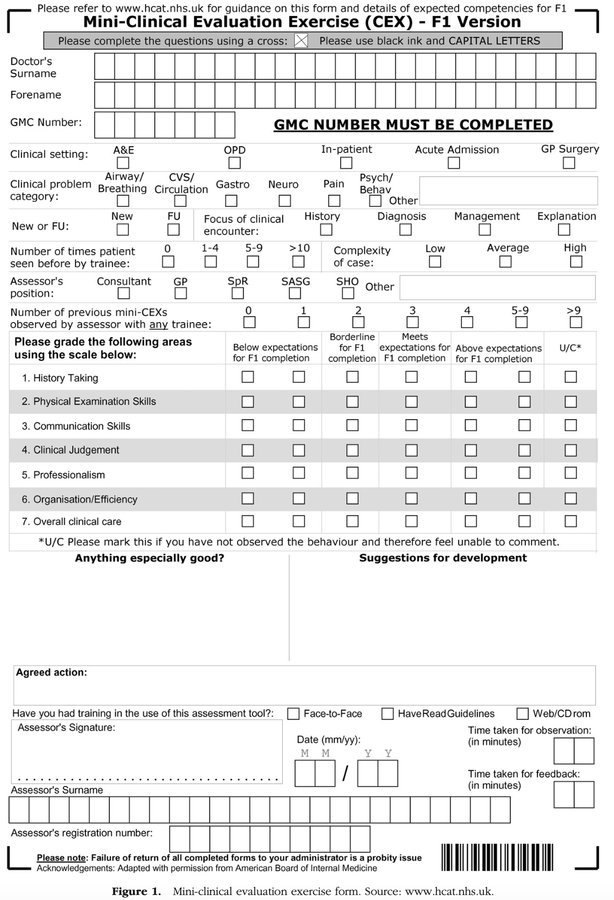
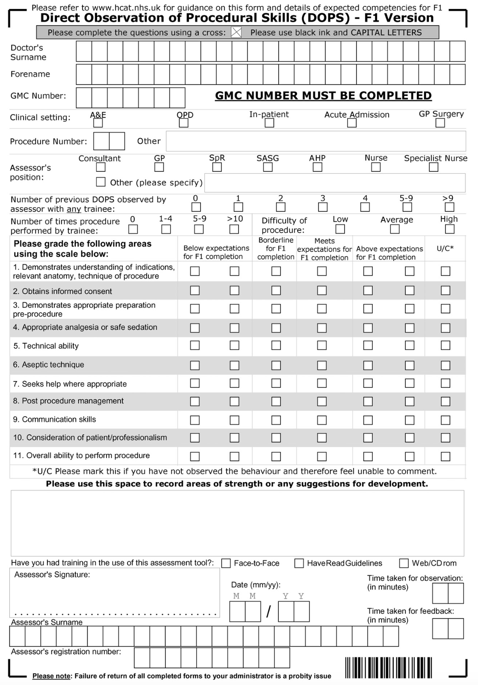
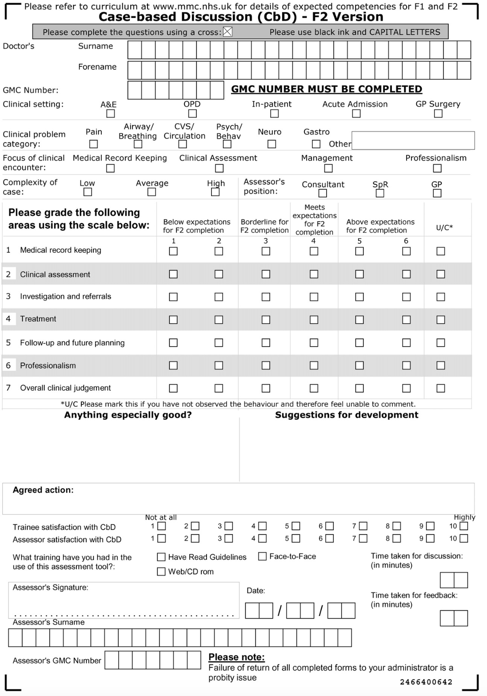

Guía para Docentes - Evaluación DOPS
1 Introducción
Esta guía docente está diseñada para facilitar la enseñanza y evaluación de competencias clínicas en el entorno del trabajo. Se alinea con las recomendaciones del AMEE Guide No. 31, que destaca la importancia de la observación directa, la retroalimentación formativa y la participación activa del estudiante en su propio proceso de aprendizaje.
2 Evaluación en el Lugar de Trabajo (WBA)
Existen diversas herramientas de evaluación basadas en el lugar de trabajo (Workplace-Based Assessment, WBA) con un propósito principalmente formativo, permitiendo al estudiante recibir retroalimentación frecuente, específica y centrada en su desempeño.
2.1 Instrumentos de evaluación
2.1.1 Mini-CEX:
- Observación estructurada de encuentros clínicos breves.
- Duración: 15 minutos + 5 minutos de retroalimentación.
- Evaluaciones múltiples con diferentes docentes.

2.1.2 DOPS (Direct Observation of Procedural Skills):
- Observación directa de procedimientos (ej. canalización venosa, toma de muestras).
- Uso de escala de 6 puntos.
- Cada evaluación incluye retroalimentación estructurada.

2.1.3 Discusión de Casos (CbD):
- Evaluación del razonamiento clínico mediante análisis de casos documentados.
- Discusión de decisiones diagnósticas y terapéuticas.

3 ¿Qué es DOPS?
La Evaluación Directa de Habilidades Procedimentales (DOPS, por sus siglas en inglés) es un instrumento de evaluación en el lugar de trabajo (WPBA) diseñado para observar procedimientos clínicos reales, proveer retroalimentación inmediata y fomentar el aprendizaje reflexivo.
En nuestro curso de nefrología intervencionista, DOPS permite evaluar competencias técnicas como:
- Inserción de catéteres venosos (temporales y tunelizados)
- Uso de fluoroscopia para posicionamiento preciso
- Evaluación del estado de volumen con ultrasonido
4 ¿Por qué usar DOPS?
DOPS ofrece:
✅ Evaluación en tiempo real y en contexto clínico real
✅ Retroalimentación inmediata (5 minutos tras el procedimiento)
✅ Fortalecimiento de la seguridad del paciente
✅ Seguimiento longitudinal del progreso del estudiante
✅ Datos para decisiones formativas y sumativas
5 ¿Cómo realizar una evaluación DOPS?
5.1 Paso 1: Accede a la app
- Ingresa a: https://necardio.shinyapps.io/dops
- Inicia sesión como evaluador (no requiere registro previo)
5.2 Paso 2: Selecciona el procedimiento observado
- Ejemplos: CVC temporal, CVC tunelizado, ultrasonido de volumen
5.3 Paso 3: Evalúa cada dominio
Para cada dominio, selecciona una de las siguientes opciones:
- 🔴 Por debajo de lo esperado
- 🟡 En el límite
- 🟢 Cumple con lo esperado
- 🟢🔵 Por encima de lo esperado
- ⚪️ No aplica / No observado
Dominios evaluados: - Técnica estéril - Habilidad técnica - Profesionalismo - Comunicación - Control de aguja y posicionamiento del catéter (según procedimiento)
5.4 Paso 4: Escribe observaciones
Incluye un comentario breve que:
- Refuerce lo que hizo bien
- Señale un aspecto a mejorar
- Sugiera una acción concreta
5.5 Paso 5: Enviar evaluación
Presiona “Enviar evaluación”. El sistema guardará la entrada con sello de tiempo en la base de datos.
6 ¿Qué sucede con los datos?
- Todas las evaluaciones son almacenadas en Supabase.
- Se pueden generar reportes individuales para analizar el progreso.
- En evaluaciones sumativas, deben realizarse al menos 3 DOPS por procedimiento, con distintos evaluadores.
7 Buenas prácticas para docentes
🧠 Sé observador: Evalúa habilidades técnicas, pero también comunicación y toma de decisiones.
🗣️ Provee retroalimentación inmediata: Usa el modelo “lo que hizo bien / qué puede mejorar / cómo hacerlo”.
📅 Sé constante: Evalúa frecuentemente, incluso varias veces por semana.
👥 Promueve la autoevaluación y la coevaluación entre pares.
📊 Consulta los reportes de análisis para guiar tutorías individuales.
8 Evaluación sumativa
Para que una DOPS cuente como parte de la evaluación sumativa:
- Debe ser realizada por un docente diferente al tutor principal.
- Deben existir al menos 3 observaciones independientes por procedimiento.
- Los resultados serán analizados para calcular confiabilidad interevaluador (ICC).
- El criterio final de competencia debe basarse en datos agregados, no en una sola observación.
9 ¿Preguntas o soporte?
Si tienes dudas sobre cómo usar la herramienta o interpretar resultados:
📧 Contacta a: juan.castellanos@urosario.edu.co
🔗 Accede al repositorio: github.com/JC4st/dops-project